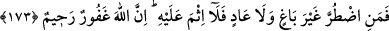

altına girmemesi için bu gibi tayyibâttan istifadeyi kesmek daha fazîletlidir.
“Tayyibât”; yâni temiz ve güzel olan şeylerden yemenin emir buyurulmasında iki
fayda vardır: Birincisi, mü’minler bunları kendi istekleriyle değil, Allah’ın emri ile
yemiş olmak sûretiyle diğer canlı varlıklardan ayrılıp şerîat nûru ile tabîat zulmetinden
kurtulma imkânı elde etmektedirler. İkincisi ise Allah Teâlâ yeme husûsunda emrini
tutanlara sevap vermektedir.
Sizi bu kadar nimetlerle rızıklandıran ve onları size helâl kılan Allah’ınıza şükredin.
Şükür, kulun zâhirî ve bâtınî bütün âzâlarını yaratıldıkları gâye uğruna kullanması
demektir. Allah Teâlâ’nın “şükredin” emri mübahlık değil, vücûb ifâde etmektedir. Bu
sebeple akl-ı selîm sahibi mükellef bir kimsenin, kendisini yaratan ve bunca sayısız
nimetlerle donatan Allah Teâlâ’nın en büyük tazime lâyık olduğuna kalbi ile inanması;
bunu dili ve diğer âzâlarıyla ızhâr etmesi vâcibtir.
Eğer Allah’a inanıyor ve sadece O’na kulluk ediyorsanız o halde sadece O’na
şükredin. Çünkü îmân bunu gerektirir. Arapların sözlerinde de bu meşhûrdur. Meselâ
adam, kendisini sevdiğini bildiği birisine: “Eğer beni seviyorsan şunu yap.” der ve
bunun muhabbetin şartlarından biri olduğunu belirtmek ve onu istenilen işi yapmaya
teşvik etmek için sözünü şartlı söyler. Fakat burada, şartın ortadan kalkması şart koşulan
şeyin ortadan kalkmasını gerektirmez. Çünkü şükür sadece ibâdet yapana değil, ibâdet
yapmayana da vâcibtir. Rasûlullah (s.a.) şöyle buyurmuştur: Allah Teâlâ şöyle buyurur:
“Benim ins ve cin ile büyük ve ilginç bir durumum var. Onları ben yaratıyorum onlar,
başkasına kulluk ediyorlar. Ben rızık veriyorum, onlar başkalarına şükrediyorlar.”
Nitekim Sa’dî der ki:
Boynunu Allah’a şükürden asla çevirme.
Kıyâmet gününde mahcûb olmayasın.
173. Allah size ancak ölüyü (leşi) kanı, domuz etini ve Allah’dan başkası adına
kesileni haram kıldı. Her kim bunlardan yemeye mecbûr kalırsa, başkasının
hakkına saldırmadan ve haddi aşmadan bir miktar yemesinde günah yoktur. Şüphe
yok ki Allah çokça bağışlayan çokça esirgeyendir.
“Meyte”, boğazlanarak kesilen hayvanlardan kesilmeksizin ölenleri ifâde eder. Örfe
dayalı olarak balık ve çekirge bundan istisnâ edilmiştir. Çünkü “falan meyte (leş) yedi”
denilince balık ve çekirge akla gelmez. Denilmiştir ki: “Et yemeyeceğine yemin eden
bir kimse, balık yerse Allah Teâlâ’nın “Allah içinden taze et (balık) yemeniz için
denizi emrinize verdi.” (en-Nahl, 16/14) buyurarak belirttiği gibi hakikatte et yemiş